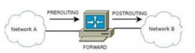
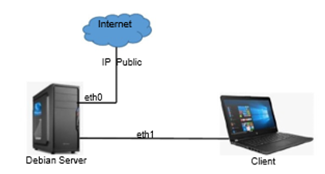
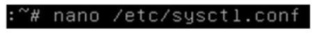
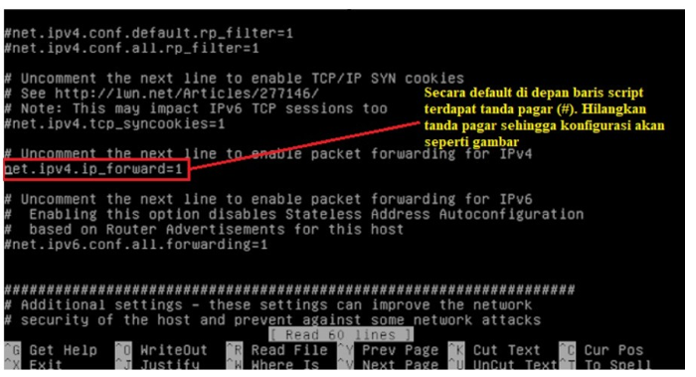
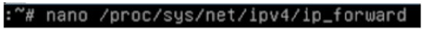
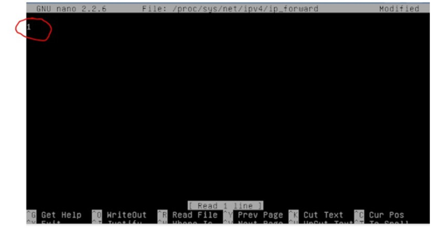
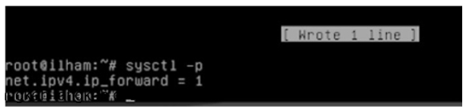
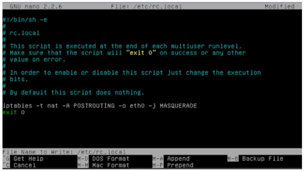
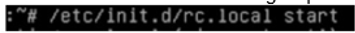
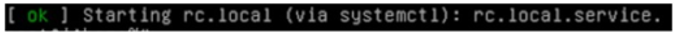

iptables [-t table] command [match] [target/jump]
IPTables memiliki 3 buah tabel, yaitu NAT, MANGLE dan FILTER. Penggunannya disesuaikan dengan sifat dan karakteristik masing-masing. Fungsi dari masing-masing tabel tersebut sebagai berikut :
Command pada baris perintah IPTables akan memberitahu apa yang harus dilakukan terhadap lanjutan sintaks perintah. Umumnya dilakukan penambahan atau penghapusan sesuatu dari tabel atau yang lain.
| Command | Keterangan |
|---|---|
| -A --append | Perintah ini menambahkan aturan pada akhir chain. Aturan akan ditambahkan di akhir baris pada chain yang bersangkutan, sehingga akan dieksekusi terakhir |
| -D --delete | Perintah ini menghapus suatu aturan pada chain. Dilakukan dengan cara menyebutkan secara lengkap perintah yang ingin dihapus atau dengan menyebutkan nomor baris dimana perintah akan dihapus. |
| -R --replace | Penggunaannya sama seperti --delete, tetapi command ini menggantinya dengan entry yang baru. |
| -I --insert | Memasukkan aturan pada suatu baris di chain. Aturan akan dimasukkan pada baris yang disebutkan, dan aturan awal yang menempati baris tersebut akan digeser ke bawah. Demikian pula baris-baris selanjutnya. |
| -L --list | Perintah ini menampilkan semua aturan pada sebuah tabel. Apabila tabel tidak disebutkan, maka seluruh aturan pada semua tabel akan ditampilkan, walaupun tidak ada aturan sama sekali pada sebuah tabel. Command ini bisa dikombinasikan dengan option (numeric) dan --x (exact). --v (verbose), -n |
| -F --flush | Perintah ini mengosongkan aturan pada sebuah chain. Apabila chain tidak disebutkan, maka semua chain akan di-flush. |
| -N --new-chain | Perintah tersebut akan membuat chain baru. |
| -X --delete-chain | Perintah ini akan menghapus chain yang disebutkan. Agar perintah di atas berhasil, tidak boleh ada aturan lain yang mengacu kepada chain tersebut. |
| -P --policy | Perintah ini membuat kebijakan default pada sebuah chain. Sehingga jika ada sebuah paket yang tidak memenuhi aturan pada baris-baris yang telah didefinisikan, maka paket akan diperlakukan sesuai dengan kebijakan default ini. |
| -E --rename-chain | Perintah ini akan merubah nama suatu chain. |
Option digunakan dikombinasikan dengan command tertentu yang akan menghasilkan suatu variasi perintah.
| Option | Command Pemakai | Keterangan |
|---|---|---|
| -v --verbose | --list, --append, --insert, --delete, --replace | Memberikan output yang lebih detail, utamanya digunakan dengan --list. Jika digunakan dengan --list, akan menampilkam K (x1.000), M (1.000.000) dan G (1.000.000.000). |
| -x --exact | --list | Memberikan output yang lebih tepat. |
| -n --numeric | --list | Memberikan output yang berbentuk angka. Alamat IP dan nomor port akan ditampilkan dalam bentuk angka dan bukan hostname ataupun nama aplikasi/servis. |
| --line-number | --list | Akan menampilkan nomor dari daftar aturan. Hal ni akan mempermudah bagi kita untuk melakukan modifikasi aturan, jika kita mau meyisipkan atau menghapus aturan dengan nomor tertentu. |
| --modprobe | All | Memerintahkan IPTables untuk memanggil modul tertentu. Bisa digunakan bersamaan dengan semua command. |
Generic Matches artinya pendefinisian kriteria yang berlaku secara umum. Dengan kata lain, sintaks generic matches akan sama untuk semua protokol. Setelah protokol didefinisikan, maka baru didefinisikan aturan yang lebih spesifik yang dimiliki oleh protokol tersebut. Hal ini dilakukan karena tiap-tiap protokol memiliki karakteristik yang berbeda, sehingga memerlukan perlakuan khusus.
| Match | Keterangan |
|---|---|
| -p --protocol | Digunakan untuk mengecek tipe protokol tertentu. Contoh protokol yang umum adalah TCP, UDP, ICMP dan ALL. Daftar protokol bisa dilihat pada /etc/protocols. Tanda inversi juga bisa diberlakukan di sini, misal kita menghendaki semua protokol kecuali icmp, maka kita bisa menuliskan --protokol ! icmp yang berarti semua kecuali icmp. |
| -s --src --source | Kriteria ini digunakan untuk mencocokkan paket berdasarkan alamat IP asal. Alamat di sini bisa berberntuk alamat tunggal seperti 192.168.1.1, atau suatu alamat network menggunakan netmask misal 192.168.1.0/255.255.255.0, atau bisa juga ditulis 192.168.1.0/24 yang artinya semua alamat 192.168.1.x. Kita juga bisa menggunakan inversi. |
| -d --dst --destination | Digunakan untuk mecocokkan paket berdasarkan alamat tujuan. Penggunaannya sama dengan match --src |
| -i --in-interface | Match ini berguna untuk mencocokkan paket berdasarkan interface di mana paket datang. Match ini hanya berlaku pada chain INPUT, FORWARD dan PREROUTING |
| -o --out-interface | Berfungsi untuk mencocokkan paket berdasarkan interface di mana paket keluar. Penggunannya sama dengan --in-interface. Berlaku untuk chain OUTPUT, FORWARD dan POSTROUTING |
Implicit Matches adalah match yang spesifik untuk tipe protokol tertentu. Implicit Match merupakan sekumpulan rule yang akan diload setelah tipe protokol disebutkan. Ada 3 Implicit Match berlaku untuk tiga jenis protokol, yaitu TCP matches, UDP matches dan ICMP matches.
| Match | Keterangan |
|---|---|
| --sport --source-port | Match ini berguna untuk mecocokkan paket berdasarkan port asal. Dalam hal ini kia bisa mendefinisikan nomor port atau nama service-nya. Daftar nama service dan nomor port yang bersesuaian dapat dilihat di /etc/services. --sport juga bisa dituliskan untuk range port tertentu. Misalkan kita ingin mendefinisikan range antara port 22 sampai dengan 80, maka kita bisa menuliskan --sport 22:80. Jika bagian salah satu bagian pada range tersebut kita hilangkan maka hal itu bisa kita artikan dari port 0, jika bagian kiri yang kita hilangkan, atau 65535 jika bagian kanan yang kita hilangkan. Contohnya --sport :80 artinya paket dengan port asal nol sampai dengan 80, atau --sport 1024: artinya paket dengan port asal 1024 sampai dengan 65535. Match ini juga mengenal inversi. |
| --dport --destination-port | Penggunaan match ini sama dengan match --source-port. |
| --tcp-flags | Digunakan untuk mencocokkan paket berdasarkan TCP flags yang ada pada paket tersebut. Pertama, pengecekan akan mengambil daftar flag yang akan diperbandingkan, dan kedua, akan memeriksa paket yang di-set 1, atau on. Pada kedua list, masing-masing entry-nya harus dipisahkan oleh koma dan tidak boleh ada spasi antar entry, kecuali spasi antar kedua list. Match ini mengenali SYN,ACK,FIN,RST,URG, PSH. Selain itu kita juga menuliskan ALL dan NONE. Match ini juga bisa menggunakan inversi. |
| --syn | Match ini akan memeriksa apakah flag SYN di-set dan ACK dan FIN tidak di-set. Perintah ini sama artinya jika kita menggunakan match -- tcp-flags SYN,ACK,FIN SYN. Paket dengan match di atas digunakan untuk melakukan request koneksi TCP yang baru terhadap server |
Karena bahwa protokol UDP bersifat connectionless, maka tidak ada flags yang mendeskripsikan status paket untuk untuk membuka atau menutup koneksi. Paket UDP juga tidak memerlukan acknowledgement. Sehingga Implicit Match untuk protokol UDP lebih sedikit daripada TCP. Ada dua macam match untuk UDP:
Paket ICMP digunakan untuk mengirimkan pesan-pesan kesalahan dan kondisi-kondisi jaringan yang lain. Hanya ada satu implicit match untuk tipe protokol ICMP, yaitu : --icmp-type
Match jenis ini berguna untuk melakukan pencocokan paket berdasarkan MAC source address. Perlu diingat bahwa MAC hanya berfungsi untuk jaringan yang menggunakan teknologi ethernet.
iptables --A INPUT --m mac --mac-source 00:00:00:00:00:01
Ekstensi Multiport Matches digunakan untuk mendefinisikan port atau port range lebih dari satu, yang berfungsi jika ingin didefinisikan aturan yang sama untuk beberapa port. Tapi hal yang perlu diingat bahwa kita tidak bisa menggunakan port matching standard dan multiport matching dalam waktu yang bersamaan.
iptables --A INPUT --p tcp --m multiport --source-port 22,53,80,110
Penggunaan match ini untuk mencocokkan paket berdasarkan pembuat atau pemilik/owner paket tersebut. Match ini bekerja dalam chain OUTPUT, akan tetapi penggunaan match ini tidak terlalu luas, sebab ada beberapa proses tidak memiliki owner (??).
iptables --A OUTPUT --m owner --uid-owner 500
Kita juga bisa memfilter berdasarkan group ID dengan sintaks --gid-owner. Salah satu penggunannya adalah bisa mencegah user selain yang dikehendaki untuk mengakses internet misalnya.
Match ini mendefinisikan state apa saja yang cocok. Ada 4 state yang berlaku, yaitu NEW, ESTABLISHED, RELATED dan INVALID. NEW digunakan untuk paket yang akan memulai koneksi baru. ESTABLISHED digunakan jika koneksi telah tersambung dan paket-paketnya merupakan bagian dari koneki tersebut. RELATED digunakan untuk paket-paket yang bukan bagian dari koneksi tetapi masih berhubungan dengan koneksi tersebut, contohnya adalah FTP data transfer yang menyertai sebuah koneksi TCP atau UDP. INVALID adalah paket yang tidak bisa diidentifikasi, bukan merupakan bagian dari koneksi yang ada.
iptables --A INPUT --m state --state RELATED,ESTABLISHED
Target atau jump adalah perlakuan yang diberikan terhadap paket-paket yang memenuhi kriteria atau match. Jump memerlukan sebuah chain yang lain dalam tabel yang sama. Chain tersebut nantinya akan dimasuki oleh paket yang memenuhi kriteria. Analoginya ialah chain baru nanti berlaku sebagai prosedur/fungsi dari program utama. Sebagai contoh dibuat sebuah chain yang bernama tcp_packets. Setelah ditambahkan aturan-aturan ke dalam chain tersebut, kemudian chain tersebut akan direferensi dari chain input.
iptables --A INPUT --p tcp --j tcp_packets
| Target | Keterangan |
|---|---|
| -j ACCEPT --jump ACCEPT | Ketika paket cocok dengan daftar match dan target ini diberlakukan, maka paket tidak akan melalui baris-baris aturan yang lain dalam chain tersebut atau chain yang lain yang mereferensi chain tersebut. Akan tetapi paket masih akan memasuki chain-chain pada tabel yang lain seperti biasa. |
| -j DROP --jump DROP | Target ini men-drop paket dan menolak untuk memproses lebih jauh. Dalam beberapa kasus mungkin hal ini kurang baik, karena akan meninggalkan dead socket antara client dan server. Paket yang menerima target DROP benar-benar mati dan target tidak akan mengirim informasi tambahan dalam bentuk apapun kepada client atau server. |
| -j RETURN --jump RETURN | Target ini akan membuat paket berhenti melintasi aturan-aturan pada chain dimana paket tersebut menemui target RETURN. Jika chain merupakan subchain dari chain yang lain, maka paket akan kembali ke superset chain di atasnya dan masuk ke baris aturan berikutnya. Apabila chain adalah chain utama misalnya INPUT, maka paket akan dikembalikan kepada kebijakan default dari chain tersebut. |
| -j MIRROR | Apabila kompuuter A menjalankan target seperti contoh di atas, kemudian komputer B melakukan koneksi http ke komputer A, maka yang akan muncul pada browser adalah website komputer B itu sendiri. Karena fungsi utama target ini adalah membalik source address dan destination address. Target ini bekerja pada chain INPUT, FORWARD dan PREROUTING atau chain buatan yang dipanggil melalui chain tersebut. |
Ada beberapa option yang bisa digunakan bersamaan dengan target ini. Yang pertama adalah yang digunakan untuk menentukan tingkat log. Tingkatan log yang bisa digunakan adalah debug, info, notice, warning, err, crit, alert dan emerg. Yang kedua adalah -j LOG --log-prefix yang digunakan untuk memberikan string yang tertulis pada awalan log, sehingga memudahkan pembacaan log tersebut.
iptables --A FORWARD --p tcp --j LOG --log-level debug
iptables --A INPUT --p tcp --j LOG --log-prefix "INPUT Packets"
Secara umum, REJECT bekerja seperti DROP, yaitu memblok paket dan menolak untuk memproses lebih lanjut paket tersebut. Tetapi, REJECT akan mengirimkan error message ke host pengirim paket tersebut. REJECT bekerja pada chain INPUT, OUTPUT dan FORWARD atau pada chain tambahan yang dipanggil dari ketiga chain tersebut.
iptables --A FORWARD --p tcp --dport 22 --j REJECT --reject-with icmp-host-unreachable
Ada beberapa tipe pesan yang bisa dikirimkan yaitu icmp-net-unreachable, icmp-host-unreachable, icmp-port-unreachable, icmp-proto-unrachable, icmp-net-prohibited dan icmp-host-prohibited.
Target ini berguna untuk melakukan perubahan alamat asal dari paket (Source Network Address Translation). Target ini berlaku untuk tabel nat pada chain POSTROUTING, dan hanya di sinilah SNAT bisa dilakukan. Jika paket pertama dari sebuah koneksi mengalami SNAT, maka paket-paket berikutnya dalam koneksi tersebut juga akan mengalami hal yang sama.
iptables --t nat --A POSTROUTING --o eth0 --j SNAT --to-source 194.236.50.155-194.236.50.160:1024-32000
Berkebalikan dengan SNAT, DNAT digunakan untuk melakukan translasi field alamat tujuan (Destination Network Address Translation) pada header dari paket-paket yang memenuhi kriteria match. DNAT hanya bekerja untuk tabel nat pada chain PREROUTING dan OUTPUT atau chain buatan yang dipanggil oleh kedua chain tersebut.
iptables --t nat --A PREROUTING --p tcp --d 15.45.23.67 --dport 80 --j DNAT --to-destination 192.168.0.2
Secara umum, target MASQUERADE bekerja dengan cara yang hampir sama seperti target SNAT, tetapi target ini tidak memerlukan option --to-source. MASQUERADE memang didesain untuk bekerja pada komputer dengan koneksi yang tidak tetap seperti dial-up atau DHCP yang akan memberi pada kita nomor IP yang berubah-ubah. Seperti halnya pada SNAT, target ini hanya bekerja untuk tabel nat pada chain POSTROUTING.
iptables --t nat --A POSTROUTING --o ppp0 --j MASQUERADE
Target REDIRECT digunakan untuk mengalihkan jurusan (redirect) paket ke mesin itu sendiri. Target ini umumnya digunakan untuk mengarahkan paket yang menuju suatu port tertentu untuk memasuki suatu aplikasi proxy, lebih jauh lagi hal ini sangat berguna untuk membangun sebuah sistem jaringan yang menggunakan transparent proxy. Contohnya kita ingin mengalihkan semua koneksi yang menuju port http untuk memasuki aplikasi http proxy misalnya squid. Target ini hanya bekerja untuk tabel nat pada chain PREROUTING dan OUTPUT atau pada chain buatan yang dipanggil dari kedua chain tersebut.
iptables --t nat --A PREROUTING --i eth1 --p tcp --dport 80 --j REDIRECT --to-port 3128
Pada mesin Linux, untuk membangun NAT dapat dilakukan dengan menggunakan iptables (Netfilter). Dimana pada iptables memiliki tabel yang mengatur NAT. Pada tabel NAT, terdiri dari 3 chain (dapat dilihat pada gambar berikut) yaitu:

Proses NAT dilakukan pada data yang akan meninggalkan ROUTER. Sehingga pada iptables untuk pengolahan NAT dilakukan pada chain POSTROUTING. Rule yang diberikan kepada paket data tersebut adalah MASQUERADE.
Langkah-langkah membangun NAT dengan iptables pada Linux Router:
# iptables -t nat -I POSTROUTING -s 192.168.1.0/24 -j MASQUERADE
Dengan menggunakan NAT ini, IP dari LAN akan dapat terkoneksi ke jaringan yang lain, tetapi tidak dapat diakses dari jaringan lain
Berdasarkan topologi di bawah ini, akan dilakukan konfigurasi internet gateway/iptables pada server Linux Debian 7.0. Sebelum langkah ini dilakukan, konfigurasi alamat jaringan dan beberapa layanan administrasi sistem jaringan lain seperti DHCP server, FTP server maupun DNS server yang diperlukan dalam konfigurasi server untuk dapat diakses oleh client diharapkan telah dilakukan.

Langkah-langkah konfigurasi adalah sebagai berikut:




Cek konfigurasi nat tadi, jika hasilnya 1 berarti berhasil dengan perintah :

Langkah-langkah di atas adalah routing. Agar IP private dapat terkoneksi dengan internet, maka diperlukan iptables firewall yang dapat mengarahkan dari ip publik ke ip private dengan cara routing NAT. Untuk setting firewall nat ada 2 cara yaitu permanen dan sementara, untuk yang sementara bisa menggunakan perintah :
Keterangan : eth0 adalah sumber dari IP publiknya. Settingan firewall ini akan hilang apabila PC di restart, karena bersifat sementara.


